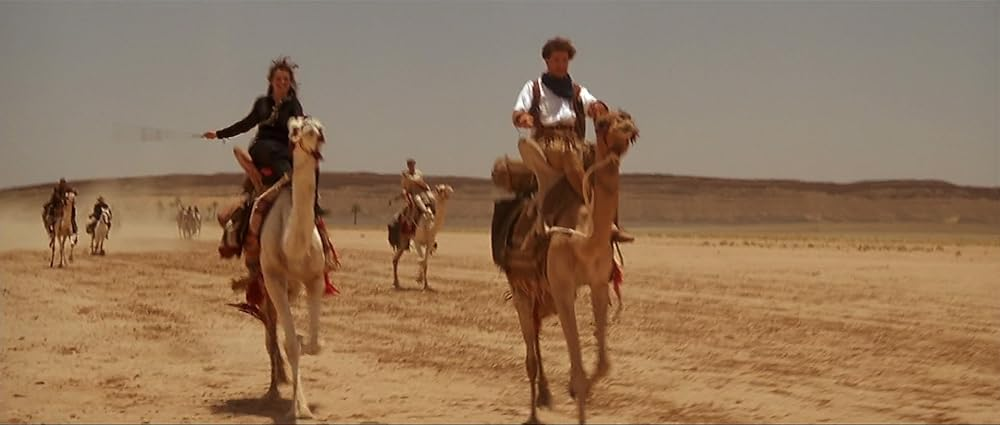
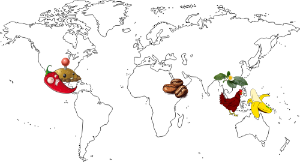

the rarely known stories of some natures' origin
8 Mar 2026
Just ask anybody: Where do dogs come from? and people will simply answer: "oh, they come from domesticated wolves, somewhen thousand of years ago".
Correct.
The same could be said about felis catus (house cats). They descended from wild cats, like felis sylvestris. When humans begin to live in proper houses and they keep wheats there, this attract rats. With the presence of rats, wild cats drew closer to game the rats, thus establishing domestication.
Even without extensive reading about the origin of cats and dogs, we all knew some common and basic facts. Perhaps it was pretty obvious.
But there are things about nature that isn't obvious or commonly known.
Middle East and camels. They go hand in hand.
We are not to be blamed for this association. The presence of camels in the 1999 film The Mummy or Indiana Jones Raiders of The Lost Ark is one of many stereotypes reinforcement.

As conventional as it may be, camels actually isn't endemic to the Middle East or North Africa, at least not in the first place.
Yes, you read that right. Camels came from other continent, faaar away.
But, before we go further, I must remind you that this phenomena is completely natural and nothing strange.
So where do camels originate from?
Around 40-50 million years ago, proto camels lived in North America. Proto means primitive. Then, between 7.5-6.5 million years ago, the ancestors of modern camel migrated into Eurasia (Europe + Asia). Some camel cousins (llamas and alpacas) migrated to South America instead.
Sadly there are no more camels left (extint) in North America, along with horses, mammoths and sabertooh tigers.
Well said Ron.
When I discovered this story, it strucked me and made me rethink "where do all of the things around us came from?". We took them for granted.
If you research on your own, you may discover such as:

I might as well create a Github repo to curate this list. Call it Awesome Origins.
Alas, camels are awesome. There are even mentions about camels in the Quran and in the Hadith (quotes from Prophet Muhammad peace be upon him).
Then do they not look at the camels - how they are created? (Quran 88:17)
Mohamad Shahrim
author of The Laksamana